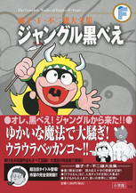

| |

定価1,260円（税込）
A5判／290ページ
好評発売中！
★は初めて単行本に収録される
作品です。
※収録内容は変更になる
場合があります。
|
★ネズミをやっつけろ（小一 73年03月号）
★どろぼう退治（小一 73年04月号）
くじらをつろう（小一 73年05月号）
だいじなお客（小一 73年06月号）
★おじさんのすいか（小一 73年07月号）
ピリミー式セミ狩り（小一 73年08月号）
★パパが会社に遅れちゃう（小一 73年09月号）
犬になろう（小一 73年10月号）
魔法「早起き鳥」（小一 73年11月号）
洗面器でさかなつり（小一 73年12月号）
★魔法で雨降らす（小二 73年03月号）
魔法で絵をうまくする（小二 73年04月号）
よくきくくすり（小二 73年05月号）
★葉っぱをお金に（小二 73年06月号）
赤くてあまいスイカ（小二 73年07月号）
たたみで水泳（小二 73年08月号）
勉強の見はり番（小二 73年09月号）
タイガーからのプレゼント（小二 73年10月号）
ごはんをまもる！（小二 73年11月号）
★洋服を贈ろう（小二 73年12月号）
★はねつき?（小二 74年01月号）
ウラウラベッカンコ（小三 73年03月号）
べんとうまにあった（小三 73年04月号）
魔法の力でいい天気（小三 73年05月号）
引っこしでアルバイト（小三 73年06月号）
のばす魔法（小三 73年07月号）
★黒べえの初恋（小三 73年08月号）
魔法の花火（小三 73年09月号）
★さわるだけで水出る（小三 73年10月号）
★黒べえちゃんがやって来た（小四 73年03月号）
ハイキングってなんだ？（小四 73年04月号）
黒べえ戦う（小四 73年05月号）
ステレオ大すき（小四 73年06月号）
一万円札の手品（小四 73年07月号）
魔法のランプ（小四 73年08月号） |
アフリカからオーム虫（小四 73年09月号）
★おーいマッチ（小四 73年10月号）
ドロボウつかまえた（小四 73年11月号）
サンタさんがやってくる（小四 73年12月号）
★ピリミーの黒べえ（小五 73年03月号）
二本足のゾウ（小五 73年04月号）
およめさんにはブタ五頭なのだ（小五 73年05月号）
魔法をつかってさあ出発（小五 73年06月号）
黒べえお手伝い（小五 73年07月号）
大こう水がくるぞ（小五 73年08月号）
地しんよこいこい！？（小五 73年09月号）
恐怖ののろい人形（小五 73年10月号）
タイガーに決とう状（小五 73年11月号）
さよなら黒べえ（小五 73年12月号）
★そらとぶ魔法しっぱい（よいこ 73年03月号）
★黒べえおつかい（よいこ 73年04月号）
★食べるまほう（よいこ 73年05月号）
★おうちのお馬（よいこ 73年06月号）
★笹の葉はえた（よいこ 73年07月号）
★黒べえの家（よいこ 73年08月号）
★おつかいペット（幼稚園 73年04月号）
★ハイキングの行先（幼稚園 73年05月号）
★魔法の水鉄砲（幼稚園 73年06月号）
★やりの上で昼寝（幼稚園 73年07月号）
★怖い犬・やさしい犬（幼稚園 73年09月号）
★きのこの傘（幼稚園 73年10月号）
★おむかえ（毎日新聞大阪版 73年2月3付）
★にらめっこ（毎日新聞大阪版 73年2月10付）
★ごみだし（毎日新聞大阪版 73年2月17付）
★シシ男のぼうし（毎日新聞大阪版 73年6月9付）
★魔法で数ふやす（毎日新聞大阪版 73年6月16付）
★花火（毎日新聞大阪版 73年6月23付）
★トンボ（毎日新聞大阪版 73年6月30付）
★ガックとカネのなる木（毎日新聞大阪版 73年7月14付） |